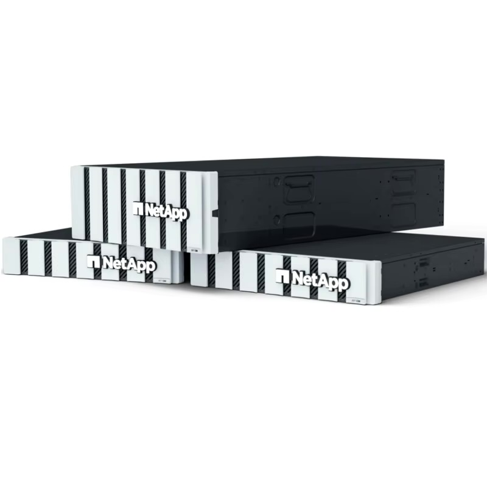

NetApp Registered Partner・認證工程師
自 2007 年專注 NetApp 儲存領域。無論是採購新機、短期租賃、還是讓過保設備繼續安心服役，儲存設備的每個階段我們都接得住。
選型建議、報價、到府安裝建置與資料遷移。依實際容量與效能需求配置，不過度銷售。
資誠 PwC、華固建設、台灣日立空調等客戶的維護合約自建置後持續至今。
備援架構規劃與建置。待確認：SnapMirror 服務現況
NetApp 現行主力產品線——容量型全快閃（Capacity Flash），以更合理的價格帶來全快閃效能與 ONTAP 完整資料管理能力。

待確認：主推型號與容量配置（C250 / C400 / C800）
索取 C 系列報價多數經銷商只做採購與建置。我們自有 FAS 系列與 DS 硬碟櫃庫存，設備過保後不會被丟下。
| 階段 | 元僑提供 |
|---|---|
| 評估期 | 短期租賃 POC 測試，先驗證再採購 |
| 採購建置 | 選型、報價、安裝、資料遷移 |
| 營運期 | 維護合約、故障排除 |
| 過保／延壽期 | FAS 系列二手零件供應，90 天保固 |
檔案伺服器容量吃緊、需要集中儲存管理。
會計、金融、營建等有長期保存要求的產業。
機關標案需要在地供應商與維護量能。
需要第二家維護供應商比價的企業。待確認：是否接手他廠建置
我們是 NetApp Registered Partner，並持有 NetApp 合格工程師認證。比起合作等級，更實際的參考是：我們自 2007 年專注 NetApp 領域近 20 年，資誠 PwC 等指標客戶的維護合約持續簽訂至今。
待確認
待確認：典型交期與建置時程